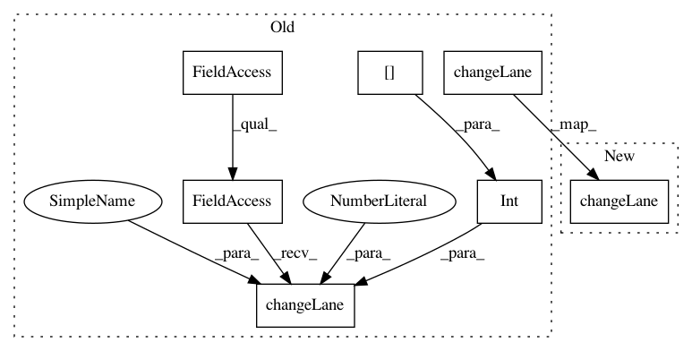

65bd3c2db9b43065f3f15fd0160c94b1618df4d6,flow/envs/base_env.py,Env,apply_lane_change,#Env#Any#Any#Any#,580
Before Change
if veh_id in self.vehicles.get_rl_ids():
if target_lane[i] != current_lane[i]:
self.traci_connection.vehicle.changeLane(
veh_id, int(target_lane[i]), 100000)
self.prev_last_lc[veh_id] = \
self.vehicles.get_state(veh_id, "last_lc")
else:
self.traci_connection.vehicle.changeLane(
veh_id, int(target_lane[i]), 100000)
self.prev_last_lc[veh_id] = \
self.vehicles.get_state(veh_id, "last_lc")
After Change
max(target_lane[i], 0), self.scenario.num_lanes(this_edge) - 1)
if target_lane[i] != current_lane[i]:
self.traci_connection.vehicle.changeLane(
veh_id, int(target_lane[i]), 100000)
if veh_id in self.vehicles.get_rl_ids():
self.prev_last_lc[veh_id] = \
self.vehicles.get_state(veh_id, "last_lc")
In pattern: SUPERPATTERN
Frequency: 3
Non-data size: 7
Instances
Project Name: flow-project/flow
Commit Name: 65bd3c2db9b43065f3f15fd0160c94b1618df4d6
Time: 2018-02-12
Author: akreidieh@gmail.com
File Name: flow/envs/base_env.py
Class Name: Env
Method Name: apply_lane_change
Project Name: flow-project/flow
Commit Name: 72fe3d87bf35cd3a41019cf72ab70796726e6e2b
Time: 2017-06-14
Author: eugenevinitsky@airbears2-10-142-39-100.airbears2.1918.berkeley.edu
File Name: cistar-dev/cistar/core/base_env.py
Class Name: SumoEnvironment
Method Name: apply_lane_change
Project Name: flow-project/flow
Commit Name: db26c45c5e16296d77edbf39442360e817b0269a
Time: 2017-06-13
Author: akreidieh@gmail.com
File Name: cistar-dev/cistar/core/base_env.py
Class Name: SumoEnvironment
Method Name: apply_lane_change